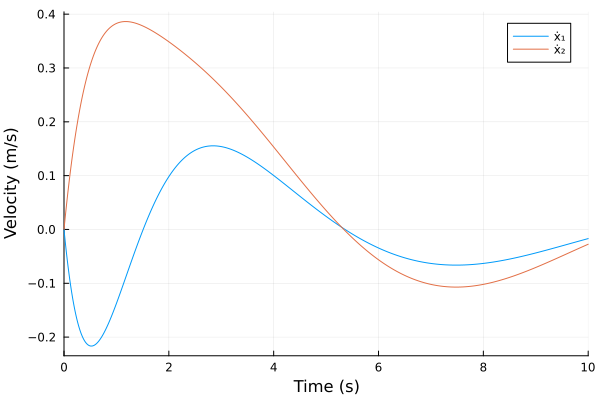
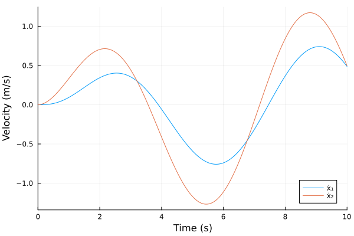
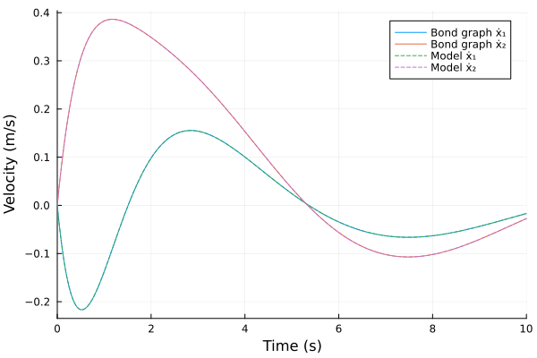
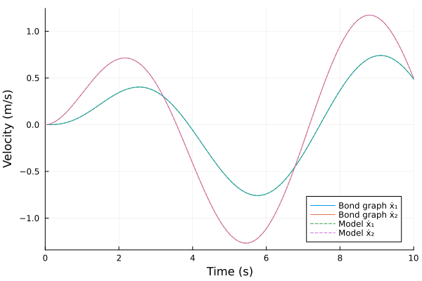

Mass-Spring-Damper system 2-DoF
The source files for all examples can be found in /examples.
Introduction
A more challenging, yet still simple, dynamic system than the harmonic oscillator is the mass-spring-damper system with two degrees of freedom. A first mass sits on a spring and a damper to the ground; a second mass sits on a coupling spring and damper on top of the first, and an external force drives it, as in the free-body diagram below:

Two-mass model
We call the lower, grounded mass $m_1$, with its ground spring $k_1$ and damper $c_1$, and the upper, forced mass $m_2$, with the coupling spring $k_2$ and damper $c_2$. This example gives both masses, both springs and both dampers equal values, so the figure labels them $m$, $k$ and $c$. As for the harmonic oscillator, the masses are rigid, the springs linear, the dampers viscous and massless, and the positions $x_1$ and $x_2$ are measured from the static equilibrium, positive in the direction of $F(t)$.
The ground spring and damper act on $m_1$ with $-k_1\,x_1 - c_1\,\dot{x}_1$. The coupling spring and damper are compressed by $x_2 - x_1$, so they push $m_2$ back with $-k_2\,(x_2 - x_1) - c_2\,(\dot{x}_2 - \dot{x}_1)$ and $m_1$ forward with the opposite force. Newton's 2nd law for each mass gives the governing equations:
\[\begin{aligned} m_1\,\ddot{x}_1 + c_1\,\dot{x}_1 + k_1\,x_1 - c_2\,(\dot{x}_2 - \dot{x}_1) - k_2\,(x_2 - x_1) &= 0, \\ m_2\,\ddot{x}_2 + c_2\,(\dot{x}_2 - \dot{x}_1) + k_2\,(x_2 - x_1) &= F(t). \end{aligned}\]
Bond Graph Model
Each mass has its own velocity, so each gets a 1-junction; the coupling spring and damper move with the relative velocity of the masses, so they share a third 1-junction. A 0-junction relates the three velocities:

As in the harmonic oscillator, the inertias (I) stand for the masses $m_1$ and $m_2$, the compliances (C) for the springs, with $C = 1/k$, and the resistances (R) for the dampers (Karnopp, Margolis & Rosenberg 2012, §3.1, pp. 38–47). The effort source Se:F(t) is the external force on $m_2$. Karnopp describes the mechanical 1-junction as a force balance at a common velocity and the mechanical 0-junction as the geometric compatibility of velocities at a common force (§3.3, pp. 58, 61).
Preliminary Steps
In this example we first build and simulate the bond graph model, unforced and forced. Then we simulate the equations derived above as a plain ModelingToolkit model and compare the results.
We import the bond-graph toolkit to model the system and OrdinaryDiffEqTsit5 to solve the resulting ODE. We also import ModelingToolkit's independent variable t and derivative D, for the forcing term and the reference model.
using BondGraphToolkit
using BondGraphToolkit.ModelingToolkit: t_nounits as t, D_nounits as D
using OrdinaryDiffEqTsit5
using PlotsSystem Element Definitions
The grounded mass with its spring and damper to the ground:
@named mass1 = Mass(m = 1.0) # (kg) Mass m₁
@named spring1 = Spring(k = 1.0) # (N/m) Ground spring stiffness k₁
@named damper1 = Damper(c = 1.0) # (N⋅s/m) Ground damping coefficient c₁\[ \begin{align} e\left( t \right) &= \mathtt{power.e}\left( t \right) \\ \mathtt{pout.e}\left( t \right) &= \mathtt{power.e}\left( t \right) \\ f\left( t \right) &= - \mathtt{pout.f}\left( t \right) + \mathtt{power.f}\left( t \right) \\ e\left( t \right) &= R ~ f\left( t \right) \end{align} \]
The forced mass with the coupling spring and damper:
@named mass2 = Mass(m = 1.0) # (kg) Mass m₂
@named spring2 = Spring(k = 1.0) # (N/m) Coupling spring stiffness k₂
@named damper2 = Damper(c = 1.0) # (N⋅s/m) Coupling damping coefficient c₂\[ \begin{align} e\left( t \right) &= \mathtt{power.e}\left( t \right) \\ \mathtt{pout.e}\left( t \right) &= \mathtt{power.e}\left( t \right) \\ f\left( t \right) &= - \mathtt{pout.f}\left( t \right) + \mathtt{power.f}\left( t \right) \\ e\left( t \right) &= R ~ f\left( t \right) \end{align} \]
The external force, zero in the unforced case and $\sin(t)$ in the forced one:
@named force = Se(0.0) # (N) External force, unforced
@named force_sin = Se(sin(t)) # (N) External force, forced\[ \begin{align} e\left( t \right) &= \mathtt{power.e}\left( t \right) \\ \mathtt{pout.e}\left( t \right) &= \mathtt{power.e}\left( t \right) \\ f\left( t \right) &= - \mathtt{pout.f}\left( t \right) + \mathtt{power.f}\left( t \right) \\ e\left( t \right) &= \sin\left( t \right) \end{align} \]
Model Construction
Differently from the 1-DoF case, where one 1-junction holds the whole model, the 2-DoF system needs three 1-junctions joined by a 0-junction. We build them in a function of the force source, so both cases share one construction:
j1is the velocity $\dot{x}_1$ of the grounded mass. The bonds of the mass, the ground spring and the ground damper point out of it, towards the elements (a bare memberx), and a free port:outexposes a bond pointing out of it, towards the 0-junction.j2is the velocity $\dot{x}_2$ of the forced mass. The source's bond points into it (force => :pout), the mass's bond out of it, and its free port:in => :inis a bond pointing into it, from the 0-junction.jcis the velocity of the coupling spring and damper. Their bonds point out of it, and its free port:in => :inis a bond pointing into it, from the 0-junction.
A plain connect of free ports is itself a 0-junction: the three bonds share one effort, the coupling force, and their flows balance with the signs of the bond directions, $\dot{x}_1 = \dot{x}_2 + v_c$. The coupling's velocity is therefore $v_c = \dot{x}_1 - \dot{x}_2$, and its spring's displacement $q_c = x_1 - x_2$ is the coupling's elongation, so the shared effort is its tension. The signs come from the bond directions at the junctions, not from the order of the connect arguments.
function two_dof(force; name)
@named j1 = Junction1(mass1, damper1, spring1, :out)
@named j2 = Junction1(force => :pout, mass2, :in => :in)
@named jc = Junction1(spring2, damper2, :in => :in)
System([connect(j1.out, j2.in, jc.in)], t; name, systems = [j1, j2, jc])
endtwo_dof (generic function with 1 method)The unforced and the forced models:
@named model = two_dof(force)
@named forced = two_dof(force_sin)\[ \begin{align} 0 &= \mathrm{connect}\left( j1_{+}out, j2_{+}in, jc_{+}in \right) \\ 0 &= \mathrm{connect}\left( mass1_{+}power, core_{+}p1 \right) \\ 0 &= \mathrm{connect}\left( damper1_{+}power, core_{+}p2 \right) \\ 0 &= \mathrm{connect}\left( spring1_{+}power, core_{+}p3 \right) \\ 0 &= \mathrm{connect}\left( out, core_{+}p4 \right) \\ - \mathtt{j1.core.p2.f}\left( t \right) &= - \mathtt{j1.core.p1.f}\left( t \right) \\ - \mathtt{j1.core.p3.f}\left( t \right) &= - \mathtt{j1.core.p1.f}\left( t \right) \\ - \mathtt{j1.core.p4.f}\left( t \right) &= - \mathtt{j1.core.p1.f}\left( t \right) \\ 0 &= - \mathtt{j1.core.p1.e}\left( t \right) - \mathtt{j1.core.p2.e}\left( t \right) - \mathtt{j1.core.p3.e}\left( t \right) - \mathtt{j1.core.p4.e}\left( t \right) \\ \frac{\mathrm{d}\mathtt{j1.mass1.p}\left( t \right)}{\mathrm{d}t} &= \mathtt{j1.mass1.e}\left( t \right) \\ \mathtt{j1.mass1.e}\left( t \right) &= \mathtt{j1.mass1.power.e}\left( t \right) \\ \mathtt{j1.mass1.pout.e}\left( t \right) &= \mathtt{j1.mass1.power.e}\left( t \right) \\ \mathtt{j1.mass1.f}\left( t \right) &= - \mathtt{j1.mass1.pout.f}\left( t \right) + \mathtt{j1.mass1.power.f}\left( t \right) \\ \mathtt{j1.mass1.f}\left( t \right) &= \frac{\mathtt{j1.mass1.p}\left( t \right)}{\mathtt{j1.mass1.I}} \\ \mathtt{j1.damper1.e}\left( t \right) &= \mathtt{j1.damper1.power.e}\left( t \right) \\ \mathtt{j1.damper1.pout.e}\left( t \right) &= \mathtt{j1.damper1.power.e}\left( t \right) \\ \mathtt{j1.damper1.f}\left( t \right) &= - \mathtt{j1.damper1.pout.f}\left( t \right) + \mathtt{j1.damper1.power.f}\left( t \right) \\ \mathtt{j1.damper1.e}\left( t \right) &= \mathtt{j1.damper1.R} ~ \mathtt{j1.damper1.f}\left( t \right) \\ \frac{\mathrm{d}\mathtt{j1.spring1.q}\left( t \right)}{\mathrm{d}t} &= \mathtt{j1.spring1.f}\left( t \right) \\ \mathtt{j1.spring1.e}\left( t \right) &= \mathtt{j1.spring1.power.e}\left( t \right) \\ \mathtt{j1.spring1.pout.e}\left( t \right) &= \mathtt{j1.spring1.power.e}\left( t \right) \\ \mathtt{j1.spring1.f}\left( t \right) &= - \mathtt{j1.spring1.pout.f}\left( t \right) + \mathtt{j1.spring1.power.f}\left( t \right) \\ \mathtt{j1.spring1.e}\left( t \right) &= \frac{\mathtt{j1.spring1.q}\left( t \right)}{\mathtt{j1.spring1.C}} \\ 0 &= \mathrm{connect}\left( force_{sin_{+}pout}, core_{+}p1 \right) \\ 0 &= \mathrm{connect}\left( mass2_{+}power, core_{+}p2 \right) \\ 0 &= \mathrm{connect}\left( \in, core_{+}p3 \right) \\ - \mathtt{j2.core.p2.f}\left( t \right) &= \mathtt{j2.core.p1.f}\left( t \right) \\ \mathtt{j2.core.p3.f}\left( t \right) &= \mathtt{j2.core.p1.f}\left( t \right) \\ 0 &= \mathtt{j2.core.p1.e}\left( t \right) - \mathtt{j2.core.p2.e}\left( t \right) + \mathtt{j2.core.p3.e}\left( t \right) \\ \mathtt{j2.force\_sin.e}\left( t \right) &= \mathtt{j2.force\_sin.power.e}\left( t \right) \\ \mathtt{j2.force\_sin.pout.e}\left( t \right) &= \mathtt{j2.force\_sin.power.e}\left( t \right) \\ \mathtt{j2.force\_sin.f}\left( t \right) &= - \mathtt{j2.force\_sin.pout.f}\left( t \right) + \mathtt{j2.force\_sin.power.f}\left( t \right) \\ \mathtt{j2.force\_sin.e}\left( t \right) &= \sin\left( t \right) \\ \frac{\mathrm{d}\mathtt{j2.mass2.p}\left( t \right)}{\mathrm{d}t} &= \mathtt{j2.mass2.e}\left( t \right) \\ \mathtt{j2.mass2.e}\left( t \right) &= \mathtt{j2.mass2.power.e}\left( t \right) \\ \mathtt{j2.mass2.pout.e}\left( t \right) &= \mathtt{j2.mass2.power.e}\left( t \right) \\ \mathtt{j2.mass2.f}\left( t \right) &= - \mathtt{j2.mass2.pout.f}\left( t \right) + \mathtt{j2.mass2.power.f}\left( t \right) \\ \mathtt{j2.mass2.f}\left( t \right) &= \frac{\mathtt{j2.mass2.p}\left( t \right)}{\mathtt{j2.mass2.I}} \\ 0 &= \mathrm{connect}\left( spring2_{+}power, core_{+}p1 \right) \\ 0 &= \mathrm{connect}\left( damper2_{+}power, core_{+}p2 \right) \\ 0 &= \mathrm{connect}\left( \in, core_{+}p3 \right) \\ - \mathtt{jc.core.p2.f}\left( t \right) &= - \mathtt{jc.core.p1.f}\left( t \right) \\ \mathtt{jc.core.p3.f}\left( t \right) &= - \mathtt{jc.core.p1.f}\left( t \right) \\ 0 &= - \mathtt{jc.core.p1.e}\left( t \right) - \mathtt{jc.core.p2.e}\left( t \right) + \mathtt{jc.core.p3.e}\left( t \right) \\ \frac{\mathrm{d}\mathtt{jc.spring2.q}\left( t \right)}{\mathrm{d}t} &= \mathtt{jc.spring2.f}\left( t \right) \\ \mathtt{jc.spring2.e}\left( t \right) &= \mathtt{jc.spring2.power.e}\left( t \right) \\ \mathtt{jc.spring2.pout.e}\left( t \right) &= \mathtt{jc.spring2.power.e}\left( t \right) \\ \mathtt{jc.spring2.f}\left( t \right) &= - \mathtt{jc.spring2.pout.f}\left( t \right) + \mathtt{jc.spring2.power.f}\left( t \right) \\ \mathtt{jc.spring2.e}\left( t \right) &= \frac{\mathtt{jc.spring2.q}\left( t \right)}{\mathtt{jc.spring2.C}} \\ \mathtt{jc.damper2.e}\left( t \right) &= \mathtt{jc.damper2.power.e}\left( t \right) \\ \mathtt{jc.damper2.pout.e}\left( t \right) &= \mathtt{jc.damper2.power.e}\left( t \right) \\ \mathtt{jc.damper2.f}\left( t \right) &= - \mathtt{jc.damper2.pout.f}\left( t \right) + \mathtt{jc.damper2.power.f}\left( t \right) \\ \mathtt{jc.damper2.e}\left( t \right) &= \mathtt{jc.damper2.R} ~ \mathtt{jc.damper2.f}\left( t \right) \end{align} \]
Analysing the model
mtkcompile reduces the model to its states: the momenta of the two masses and the displacements of the two springs.
sys = mtkcompile(model)\[ \begin{align} \frac{\mathrm{d}\mathtt{jc.spring2.q}\left( t \right)}{\mathrm{d}t} &= \mathtt{jc.damper2.f}\left( t \right) \\ \frac{\mathrm{d}\mathtt{j2.mass2.p}\left( t \right)}{\mathrm{d}t} &= \mathtt{jc.core.p1.e}\left( t \right) + \mathtt{jc.core.p2.e}\left( t \right) \\ \frac{\mathrm{d}\mathtt{j1.spring1.q}\left( t \right)}{\mathrm{d}t} &= \mathtt{j1.damper1.f}\left( t \right) \\ \frac{\mathrm{d}\mathtt{j1.mass1.p}\left( t \right)}{\mathrm{d}t} &= - \mathtt{j1.core.p2.e}\left( t \right) - \mathtt{j1.core.p3.e}\left( t \right) - \mathtt{j2.core.p2.e}\left( t \right) \end{align} \]
Print system states
unknowns(sys)4-element Vector{SymbolicUtils.BasicSymbolicImpl.var"typeof(BasicSymbolicImpl)"{SymReal}}:
jc₊spring2₊q(t)
j2₊mass2₊p(t)
j1₊spring1₊q(t)
j1₊mass1₊p(t)Print system parameters
parameters(sys)6-element Vector{SymbolicUtils.BasicSymbolicImpl.var"typeof(BasicSymbolicImpl)"{SymReal}}:
j1₊mass1₊I
j1₊damper1₊R
j1₊spring1₊C
j2₊mass2₊I
jc₊spring2₊C
jc₊damper2₊RPrint the system's equations in terms of the states
full_equations(sys)\[ \begin{align} \frac{\mathrm{d}\mathtt{jc.spring2.q}\left( t \right)}{\mathrm{d}t} &= \frac{\mathtt{j1.mass1.p}\left( t \right)}{\mathtt{j1.mass1.I}} + \frac{ - \mathtt{j2.mass2.p}\left( t \right)}{\mathtt{j2.mass2.I}} \\ \frac{\mathrm{d}\mathtt{j2.mass2.p}\left( t \right)}{\mathrm{d}t} &= \frac{\mathtt{jc.spring2.q}\left( t \right)}{\mathtt{jc.spring2.C}} + \mathtt{jc.damper2.R} ~ \left( \frac{\mathtt{j1.mass1.p}\left( t \right)}{\mathtt{j1.mass1.I}} + \frac{ - \mathtt{j2.mass2.p}\left( t \right)}{\mathtt{j2.mass2.I}} \right) \\ \frac{\mathrm{d}\mathtt{j1.spring1.q}\left( t \right)}{\mathrm{d}t} &= \frac{\mathtt{j1.mass1.p}\left( t \right)}{\mathtt{j1.mass1.I}} \\ \frac{\mathrm{d}\mathtt{j1.mass1.p}\left( t \right)}{\mathrm{d}t} &= - \frac{\mathtt{jc.spring2.q}\left( t \right)}{\mathtt{jc.spring2.C}} + \frac{ - \mathtt{j1.spring1.q}\left( t \right)}{\mathtt{j1.spring1.C}} + \frac{ - \mathtt{j1.damper1.R} ~ \mathtt{j1.mass1.p}\left( t \right)}{\mathtt{j1.mass1.I}} - \mathtt{jc.damper2.R} ~ \left( \frac{\mathtt{j1.mass1.p}\left( t \right)}{\mathtt{j1.mass1.I}} + \frac{ - \mathtt{j2.mass2.p}\left( t \right)}{\mathtt{j2.mass2.I}} \right) \end{align} \]
bgequations gives the same equations in terms of the states. We rename the momenta $p_1$ and $p_2$, the ground spring's displacement $x_1$, the coupling's elongation $q_c$, and the parameters to the symbols of the hand derivation:
@variables p₁(t) p₂(t) x₁(t) q_c(t)
@parameters m₁ c₁ k₁ m₂ c₂ k₂
eqs = bgequations(model; rename = Dict(
model.j1.mass1.p => p₁, model.j2.mass2.p => p₂,
model.j1.spring1.q => x₁, model.jc.spring2.q => q_c,
model.j1.mass1.I => m₁, model.j1.damper1.R => c₁, model.j1.spring1.C => 1 / k₁,
model.j2.mass2.I => m₂, model.jc.damper2.R => c₂, model.jc.spring2.C => 1 / k₂))
latexify(eqs)\begin{align} \frac{\mathrm{d}\mathtt{q_c}\left( t \right)}{\mathrm{d}t} &= \frac{\mathtt{p1}\left( t \right)}{\mathtt{m1}} + \frac{ - \mathtt{p2}\left( t \right)}{\mathtt{m2}} \ \frac{\mathrm{d}\mathtt{p2}\left( t \right)}{\mathrm{d}t} &= \mathtt{c2} ~ \left( \frac{\mathtt{p1}\left( t \right)}{\mathtt{m1}} + \frac{ - \mathtt{p2}\left( t \right)}{\mathtt{m2}} \right) + \mathtt{k2} ~ \mathtt{q\c}\left( t \right) \ \frac{\mathrm{d}\mathtt{x1}\left( t \right)}{\mathrm{d}t} &= \frac{\mathtt{p1}\left( t \right)}{\mathtt{m1}} \ \frac{\mathrm{d}\mathtt{p1}\left( t \right)}{\mathrm{d}t} &= \frac{ - \mathtt{c1} ~ \mathtt{p1}\left( t \right)}{\mathtt{m1}} - \mathtt{c2} ~ \left( \frac{\mathtt{p1}\left( t \right)}{\mathtt{m1}} + \frac{ - \mathtt{p2}\left( t \right)}{\mathtt{m2}} \right) - \mathtt{k1} ~ \mathtt{x1}\left( t \right) - \mathtt{k2} ~ \mathtt{q\c}\left( t \right) \end{align}
The two displacement equations give the springs' velocities: $\dot{x}_1 = p_1/m_1$, the flow of j1, and $\dot{q}_c = p_1/m_1 - p_2/m_2$, from the 0-junction, so $q_c = x_1 - x_2$. The two momentum equations are the force balances of the masses' 1-junctions, with $F = 0$ in this case. On the grounded mass the coupling's tension $k_2\,q_c + c_2\,(\dot{x}_1 - \dot{x}_2)$ pulls back, on the forced mass it pulls forward. Substituting $p_i = m_i\,\dot{x}_i$ and $q_c = x_1 - x_2$ gives the two equations derived by hand.
System Simulations
Bond graph model
Define the simulation time
tspan = (0.0, 10.0)(0.0, 10.0)The unforced system starts from rest with the coupling spring stretched by one unit, $q_c(0) = x_1(0) - x_2(0) = 1$, and the grounded mass at $x_1(0) = 0$.
prob = ODEProblem(sys, [sys.jc.spring2.q => 1.0], tspan)ODEProblem with uType Vector{Float64} and tType Float64. In-place: true
Initialization status: FULLY_DETERMINED
Non-trivial mass matrix: false
timespan: (0.0, 10.0)
u0: 4-element Vector{Float64}:
1.0
0.0
0.0
0.0Use solve to simulate the system.
sol = solve(prob, Tsit5(), reltol = 1e-10, abstol = 1e-10)
plot(sol, idxs = [model.j1.mass1.f, model.j2.mass2.f], labels = ["ẋ₁" "ẋ₂"],
xlabel = "Time (s)", ylabel = "Velocity (m/s)")
The forced system starts at rest at the origin, the springs' default.
forced_sol = solve(ODEProblem(mtkcompile(forced), [], tspan), Tsit5(),
reltol = 1e-10, abstol = 1e-10)
plot(forced_sol, idxs = [forced.j1.mass1.f, forced.j2.mass2.f],
labels = ["ẋ₁" "ẋ₂"], xlabel = "Time (s)", ylabel = "Velocity (m/s)")
Two-mass model
The reference model is the pair of equations derived by hand, written as first-order equations in the positions $x_1$, $x_2$ and the velocities $v_1 = \dot{x}_1$, $v_2 = \dot{x}_2$:
@variables x₂(t) v₁(t) v₂(t)
m₁ᵥ, k₁ᵥ, c₁ᵥ = 1.0, 1.0, 1.0 # (kg, N/m, N⋅s/m) Grounded mass, spring, damper
m₂ᵥ, k₂ᵥ, c₂ᵥ = 1.0, 1.0, 1.0 # (kg, N/m, N⋅s/m) Forced mass, coupling spring, damper
two_dof_eqs(F) = [
D(x₁) ~ v₁,
D(x₂) ~ v₂,
m₁ᵥ * D(v₁) ~ -c₁ᵥ * v₁ - k₁ᵥ * x₁ + c₂ᵥ * (v₂ - v₁) + k₂ᵥ * (x₂ - x₁),
m₂ᵥ * D(v₂) ~ F - c₂ᵥ * (v₂ - v₁) - k₂ᵥ * (x₂ - x₁),
]two_dof_eqs (generic function with 1 method)One System per case. The unforced one starts with the coupling stretched by one unit, $x_2(0) = -1$; the forced one at rest at the origin.
@named ref = System(two_dof_eqs(0.0), t)
ref_sol = solve(ODEProblem(mtkcompile(ref), [x₁ => 0.0, x₂ => -1.0, v₁ => 0.0, v₂ => 0.0],
tspan), Tsit5(), reltol = 1e-10, abstol = 1e-10)
@named ref_forced = System(two_dof_eqs(sin(t)), t)
ref_forced_sol = solve(ODEProblem(mtkcompile(ref_forced),
[x₁ => 0.0, x₂ => 0.0, v₁ => 0.0, v₂ => 0.0], tspan),
Tsit5(), reltol = 1e-10, abstol = 1e-10);Compare models
We compare the velocities of the two masses, the flows of their 1-junctions in the bond graph.
Unforced case
plot(sol, idxs = [model.j1.mass1.f, model.j2.mass2.f],
labels = ["Bond graph ẋ₁" "Bond graph ẋ₂"], ylabel = "Velocity (m/s)")
plot!(ref_sol, idxs = [v₁, v₂], labels = ["Model ẋ₁" "Model ẋ₂"], xlabel = "Time (s)",
linestyle = :dash)
Forced case
plot(forced_sol, idxs = [forced.j1.mass1.f, forced.j2.mass2.f],
labels = ["Bond graph ẋ₁" "Bond graph ẋ₂"], ylabel = "Velocity (m/s)")
plot!(ref_forced_sol, idxs = [v₁, v₂], labels = ["Model ẋ₁" "Model ẋ₂"],
xlabel = "Time (s)", linestyle = :dash)
The largest difference between the two models on a common time grid, over both velocities and both displacements ($x_1$ and the coupling's elongation $x_1 - x_2$), for both cases:
tgrid = range(tspan..., length = 1001)
maxdiff(bg, m, ref) = maximum(maximum(abs.(bg(tgrid; idxs = a) .- ref(tgrid; idxs = b)))
for (a, b) in [m.j1.mass1.f => v₁, m.j2.mass2.f => v₂,
m.j1.spring1.q => x₁, m.jc.spring2.q => x₁ - x₂])
maxdiff(sol, model, ref_sol), maxdiff(forced_sol, forced, ref_forced_sol)(1.3949064125995392e-11, 3.805955550717499e-11)The bond graph model reproduces the hand-derived dynamics of the two-mass system.
This page was generated using Literate.jl.